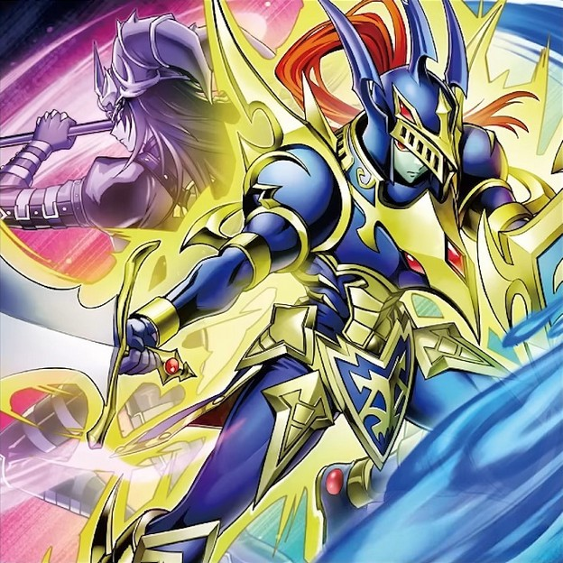

混沌
记述有「光与暗的仪式」的卡包含以下卡: 「光与暗的仪式」, 「超魔剑士 黑混沌」, 「混沌之魔王-骸骨恶魔」, 「精灵圣贤者」, 「栗球兽卫」, 「黑色混沌之魔术师 黑混沌」, 「光与暗之战士 混沌战士」, 「混沌之魔术箱」, 「混沌礼帽」, 「两颗心灵」, 「团结的恶魔龙 暗黑魔龙」, 「魔法效果之剑」
裁定
「栗球兽卫」被墓指场合, 里侧表示或是手卡/墓地的「栗球兽卫」也能适用②效果.
「栗球兽卫」被「禁止令」宣言过的场合, ②效果无论在什么场所都不适用.
「混沌礼帽」特殊召唤的仍处在里侧表示的怪兽不能作为「两颗心灵」②效果的Cost回手. 表侧表示的可以.
「混沌礼帽」的特殊召唤不是从卡组把怪兽特殊召唤. 「不能从卡组把怪兽特殊召唤」的场合也可以发动「混沌礼帽」. 不会使「欢聚友伴·茸茸长尾山雀」抽卡. 「妖眼之相剑师」的②也不能发动. 也不能发动「灰流丽」
「混沌礼帽」是包含把怪兽特殊召唤的效果, 可以对应发动「灵王的波动」.
「混沌礼帽」处理时, 自己主要怪兽区域不存在任何1只表侧表示怪兽或是存在的表侧表示怪兽都不受魔法卡影响时, 这个处理完全不进行.
「混沌礼帽」特殊召唤的怪兽, 被翻开然后作为陷阱卡或是魔法卡在魔法陷阱区域表侧表示放置, 也不会适用那些作为陷阱卡或魔法卡时适用的效果.
「混沌礼帽」特殊召唤的怪兽被返回手卡之际, 是魔法/陷阱卡返回手卡.
也可以以「混沌礼帽」特殊召唤的又变为表侧表示的原本是魔法/陷阱卡的怪兽为对象发动「妖精传姬-辉夜」的②效果, 也可以把「混沌礼帽」送去墓地来无效「妖精传姬-辉夜」的②效果.
「次元的裂缝」的①效果适用中, 怪兽区域存在表侧表示的陷阱卡, 那些卡: 可以作为召唤手续是将陷阱卡送去墓地的召唤条件的召唤手续; 可以作为召唤手续是将怪兽送去墓地的召唤条件的召唤手续; 可以用效果送去墓地, 后续也会正常处理; 可以作为Cost是将陷阱卡送去墓地才能发动的效果的Cost; 可以作为Cost是将卡送去墓地才能发动的效果的Cost; 不能作为Cost是将怪兽送去墓地才能发动的效果的Cost.
C1发动「鲜花女男爵」①效果取对象一个怪兽, C2发动「增殖的G」, C3发动「混沌礼帽」将被取对象的怪兽洗切盖放后, C1处理时仍然破坏那只怪兽.
「两颗心灵」的②效果不能Cost将融合/同调怪兽回手.
注意
「混沌礼帽」只能洗顶部卡之中的怪兽.
「混沌之魔王-骸骨恶魔」②效果可以Cost任意仪式魔法.
「超魔剑士 黑混沌」③效果必须除外2张卡, 对方场上只存在1张卡的场合不能发动.
自肃
「精灵圣贤者」①效果(抽卡效果)发动后有只有1次从额外卡组特召自肃.